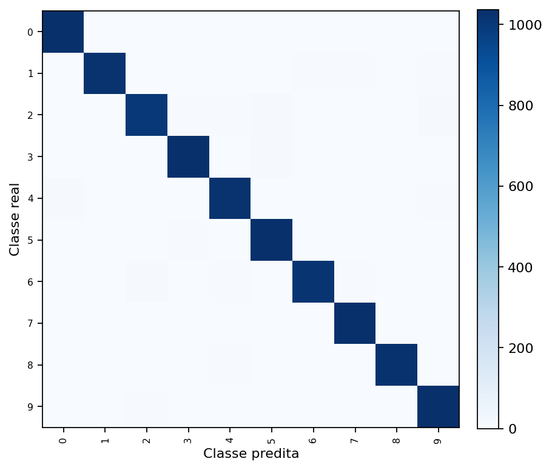
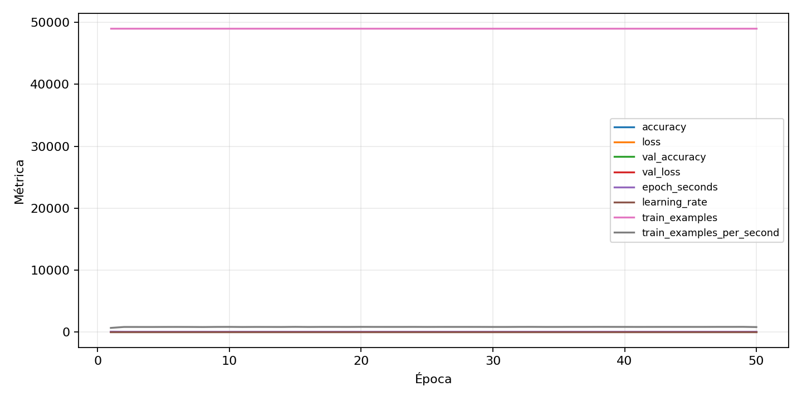

| n_samples | 10500 |
|---|---|
| loss | 0.11970986425876617 |
| accuracy | 0.9775238095238096 |
| balanced_accuracy | 0.9775238095238097 |
| macro_f1 | 0.97751302685656 |


| Índice | Classe | Suporte | Precisão | Recall | F1 |
|---|---|---|---|---|---|
| 0 | 0 | 1050 | 0.9745283018867924 | 0.9838095238095238 | 0.9791469194312796 |
| 1 | 1 | 1050 | 0.9855491329479769 | 0.9742857142857143 | 0.9798850574712645 |
| 2 | 2 | 1050 | 0.9757045675413022 | 0.9561904761904761 | 0.9658489658489657 |
| 3 | 3 | 1050 | 0.9809705042816366 | 0.981904761904762 | 0.9814374107567825 |
| 4 | 4 | 1050 | 0.9696969696969697 | 0.9752380952380952 | 0.9724596391263057 |
| 5 | 5 | 1050 | 0.9700654817586529 | 0.9876190476190476 | 0.978763567720623 |
| 6 | 6 | 1050 | 0.9759615384615384 | 0.9666666666666667 | 0.9712918660287081 |
| 7 | 7 | 1050 | 0.981042654028436 | 0.9857142857142858 | 0.983372921615202 |
| 8 | 8 | 1050 | 0.991321118611379 | 0.979047619047619 | 0.9851461427886918 |
| 9 | 9 | 1050 | 0.9708920187793427 | 0.9847619047619047 | 0.9777777777777779 |
{"adapter":"kmnist","balance_mode":"all_raw","class_names":["0","1","2","3","4","5","6","7","8","9"],"dataset":"kmnist","dataset_options":{},"dataset_root":"/home/msduda/datasets-tcc/kmnist","native_channels":1,"normalization":"unit_interval","num_classes":10,"protocol":{"checkpoint_monitor":"val_macro_f1","dtype_policy":"mixed_float16","early_stopping":{"patience":50,"restore_best_weights":true},"evaluation_augmentation":false,"input_channels":"native","optimizer":"Adam","pretrained_weights":false,"reduce_lr_on_plateau":{"factor":0.3,"min_lr":1e-07,"patience":50},"resize":"proportional_padding","test_time_augmentation":false,"training_from_scratch":true},"seed":42,"source_fingerprint":"8928d478d8d23938a73b4f4a92c407bf3d74beff1e0e67e3644d6ecdc30cf828","source_manifest":{"class_names":["0","1","2","3","4","5","6","7","8","9"],"joined_samples":70000,"metadata":{"layout":"kmnist-component-npz"},"name":"kmnist","native_channels":1,"source_path":"/home/msduda/datasets-tcc/kmnist","splits":{"test":10000,"train":60000},"target_size":64},"target_size":64,"test_fraction":0.15,"train_fraction":0.7,"training":{"augmentation":{"brightness_delta":0.0,"contrast_lower":1.0,"contrast_upper":1.0,"cutout_max_frac":0.0,"cutout_prob":0.0,"flip_lr":false,"noise_std":0.0,"translate_frac":0.0,"zoom_max":1.0,"zoom_min":1.0},"batch_size":176,"default_image_size":64,"dtype_policy":"mixed_float16","early_stopping_patience":50,"extra_fraction":0.0,"image_size_overrides":{"gtsrb":128},"keras_verbose":1,"learning_rate":0.0003,"max_epochs":50,"preprocess_cache_max_mib":0,"reduce_lr_factor":0.3,"reduce_lr_min_lr":1e-07,"reduce_lr_patience":50,"shuffle_buffer_max_mib":0},"validation_fraction":0.15}
{"epochs_completed":50,"epochs_recorded":50,"evaluation_seconds":21.543208888000663,"fit_seconds_current_attempt":3581.7256334409976,"max_epoch_seconds":72.30652531599844,"max_epochs":50,"mean_epoch_seconds":58.8018747816197,"mean_train_examples_per_second":834.0955763677371,"median_train_examples_per_second":838.6236135049248,"min_epoch_seconds":57.71471617300267,"selected_checkpoint":"/mnt/e/tcc-benchmark/outputs/kmnist-alldata-noaug-batch-sweep-2026-08-06/batch-176/kmnist/runs/kmnist__unit_interval__all_raw__seed-42/checkpoints/best.keras","total_seconds":2940.093739080985,"training_seconds":2940.093739080985,"wall_seconds_current_attempt":3606.839459521998}
{"elapsed_seconds":3606.885292884999,"event_counts":{"data_preparation_end":1,"data_preparation_start":1,"epoch_end":50,"evaluation_end":1,"evaluation_start":1,"fit_end":1,"fit_start":1,"periodic":711,"run_completed":1,"train_start":1},"generated_at":"2026-08-07T12:18:03.292+00:00","gpu_backend":"pynvml","interval_seconds":5.0,"metrics":{"cpu_percent":{"count":769,"max":17.3,"mean":12.87217165149545,"min":0.0,"p50":12.7,"p95":16.7},"disk_data_free_bytes":{"count":769,"max":998271262720.0,"mean":998271201407.8335,"min":998271193088.0,"p50":998271201280.0,"p95":998271201280.0},"disk_data_percent":{"count":769,"max":2.7,"mean":2.7,"min":2.7,"p50":2.7,"p95":2.7},"disk_data_total_bytes":{"count":769,"max":1081101176832.0,"mean":1081101176832.0,"min":1081101176832.0,"p50":1081101176832.0,"p95":1081101176832.0},"disk_data_used_bytes":{"count":769,"max":27837628416.0,"mean":27837620096.16645,"min":27837558784.0,"p50":27837620224.0,"p95":27837620224.0},"disk_output_free_bytes":{"count":769,"max":207312330752.0,"mean":207299409954.62158,"min":207298392064.0,"p50":207299284992.0,"p95":207299559424.0},"disk_output_percent":{"count":769,"max":79.3,"mean":79.3,"min":79.3,"p50":79.3,"p95":79.3},"disk_output_total_bytes":{"count":769,"max":1000186310656.0,"mean":1000186310656.0,"min":1000186310656.0,"p50":1000186310656.0,"p95":1000186310656.0},"disk_output_used_bytes":{"count":769,"max":792887918592.0,"mean":792886900701.3784,"min":792873979904.0,"p50":792887025664.0,"p95":792887828480.0},"elapsed_seconds":{"count":769,"max":3606.833633,"mean":1806.4163108192458,"min":0.026836,"p50":1808.901281,"p95":3440.9797272},"gpu_count":{"count":769,"max":1.0,"mean":1.0,"min":1.0,"p50":1.0,"p95":1.0},"gpu_memory_percent":{"count":769,"max":34.99550819396973,"mean":34.63651802201885,"min":30.088329315185547,"p50":34.67049598693848,"p95":34.80935096740723},"gpu_memory_total_bytes":{"count":769,"max":8589934592.0,"mean":8589934592.0,"min":8589934592.0,"p50":8589934592.0,"p95":8589934592.0},"gpu_memory_used_bytes":{"count":769,"max":3006091264.0,"mean":2975254243.037711,"min":2584567808.0,"p50":2978172928.0,"p95":2990100480.0},"gpu_temperature_c":{"count":769,"max":48.0,"mean":41.15474642392718,"min":37.0,"p50":40.0,"p95":47.0},"gpu_utilization_percent":{"count":769,"max":97.0,"mean":19.22886866059818,"min":0.0,"p50":15.0,"p95":43.0},"process_cpu_percent":{"count":769,"max":218.8,"mean":166.22730819245774,"min":0.0,"p50":151.5,"p95":213.6},"process_read_bytes":{"count":769,"max":10067968.0,"mean":10059626.860858258,"min":7933952.0,"p50":10067968.0,"p95":10067968.0},"process_rss_bytes":{"count":769,"max":3891515392.0,"mean":3714070152.488947,"min":1030344704.0,"p50":3813683200.0,"p95":3866697728.0},"process_vms_bytes":{"count":769,"max":49828114432.0,"mean":49554967851.609886,"min":39580528640.0,"p50":49677209600.0,"p95":49799593164.8},"process_write_bytes":{"count":769,"max":1392640.0,"mean":1377156.1612483745,"min":4096.0,"p50":1392640.0,"p95":1392640.0},"ram_available_bytes":{"count":769,"max":15519571968.0,"mean":13002933891.162548,"min":12827373568.0,"p50":12905283584.0,"p95":13486694400.0},"ram_percent":{"count":769,"max":22.8,"mean":21.75786736020806,"min":6.6,"p50":22.3,"p95":22.7},"ram_total_bytes":{"count":769,"max":16619077632.0,"mean":16619077632.0,"min":16619077632.0,"p50":16619077632.0,"p95":16619077632.0},"ram_used_bytes":{"count":769,"max":3791704064.0,"mean":3616143740.8374515,"min":1099505664.0,"p50":3713794048.0,"p95":3766453862.4}},"sample_count":769,"schema_version":1}